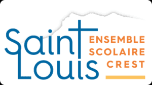
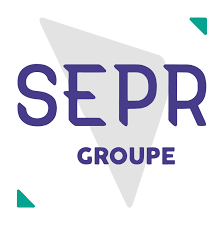
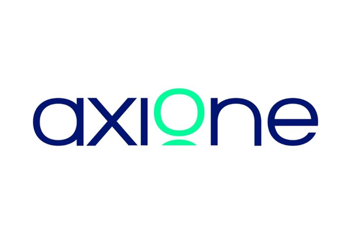
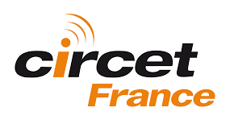

Qui suis-je, quelles sont mes qualités, mes compétences et les outils que je maîtrise.
À propos de moi
Titulaire d'un BTS SIO option SISR obtenu en alternance chez Circet, je suis aujourd'hui en Bachelor Spécialiste Cybersécurité (Bac+3) à CSB.SCHOOL.
Je recherche une alternance en cybersécurité défensive pour me spécialiser dans la supervision, la détection d'incidents et la protection des systèmes et des réseaux, avec pour objectif de devenir RSSI. En dehors des cours, je m'entraîne sur TryHackMe et je monte mes propres labs.
Parcours scolaire
Mon parcours de formation, du baccalauréat professionnel au Bachelor Spécialiste Cybersécurité.

Crest (26)
Baccalauréat Professionnel Systèmes Numériques — obtenu avec Mention Bien. Premières bases en électronique, informatique, réseaux et dépannage.

Lyon 3 (69)
BTS SIO — option SISR (Services Informatiques aux Organisations, Solutions d'Infrastructure, Systèmes et Réseaux) obtenu en alternance. Formation complète à l'administration des systèmes et des réseaux, avec une forte composante sécurisation et virtualisation.
Charbonnières-les-Bains (69)
Bachelor Spécialiste Cybersécurité (Bac+3), en recherche d'alternance. Spécialisation en cybersécurité défensive : supervision, détection d'incidents et protection des systèmes et des réseaux.
Expériences
Mes expériences en entreprise : administration réseau, systèmes Windows / AD, premières missions de sécurisation, et les emplois qui m'ont appris à travailler en équipe.
Emplois saisonniers — France
6 CDD : travaux en pépinière (dont plantation), travaux de vigne et vendanges. Une première expérience du travail en équipe et de la rigueur sur le terrain.
Stage — Valence (26)
Stage en raccordement fibre : raccordement d'abonnés et service après-vente sur le réseau fibre.

Stage technicien fibre — Valence (26)
Immersion chez un opérateur d'infrastructures télécoms.
Missions d'intérim — France
4 missions d'intérim (avril, juin, juillet et août 2024) avant le début de mon alternance.

Alternance, aide technicien réseau — Chassieu (69)
Alternance de 2 ans pendant le BTS SIO SISR chez le leader français des infrastructures télécoms.
Responsable Bureau d'Études (intérim via Iziwork) — Chassieu (69)
Mission du 1er septembre au 16 octobre 2026, à la suite de mon alternance.
Qualités
Les traits de caractère qui me définissent dans mon parcours étudiant et professionnel.
Je vais toujours au bout et les défis ne me font pas peur. Je veux que tout soit bien fait : mes règles de pare-feu pfSense sont propres et claires, pour que la personne qui reprend derrière moi comprenne sans avoir à chercher.
Je m'entraîne sur TryHackMe et je monte mes propres labs pour tester et apprendre par moi-même.
J'ai toujours travaillé en équipe, avec des personnes avec qui il fallait collaborer pour faire avancer le projet.
Compétences
Pendant mon BTS SIO option SISR et mon alternance, j'ai développé des compétences en administration systèmes et réseaux, en sécurisation des infrastructures et en supervision, que j'approfondis en Bachelor cybersécurité.
Outils
Les logiciels, systèmes et services que j'ai utilisés en formation et en entreprise. Passez la souris sur le carrousel pour figer le défilement, puis cliquez sur un logo pour afficher sa description.
Certifications
Celle que j'ai obtenue et celles que je prépare pendant mon Bachelor cybersécurité.
MOOC de l'Agence nationale de la sécurité des systèmes d'information : les 4 modules validés avec 100 % à chaque évaluation (panorama de la SSI, authentification, sécurité sur Internet, poste de travail et nomadisme).
Voir l'attestation (PDF)Certification EC-Council sur les techniques d'attaque, pour mieux comprendre et anticiper les menaces.
Certification ISC2 de référence en gestion de la sécurité de l'information, alignée sur mon objectif de devenir RSSI.
Norme internationale des systèmes de management de la sécurité de l'information (SMSI).
Certification reconnue sur les fondamentaux de la sécurité opérationnelle, que je vise ensuite.
En dehors du travail
CV
Téléchargez mon CV au format PDF pour découvrir mon parcours complet.